Task idea !!:
First of all you might wonder why the phone holder is my choice to fabricate it as my first laser cutting task. Actually, I decided to fabricate something that helps me to do my lovely hobby which is video records.
As you can see in those photos I have a youtube channel in which I give people some courses and helpful advice
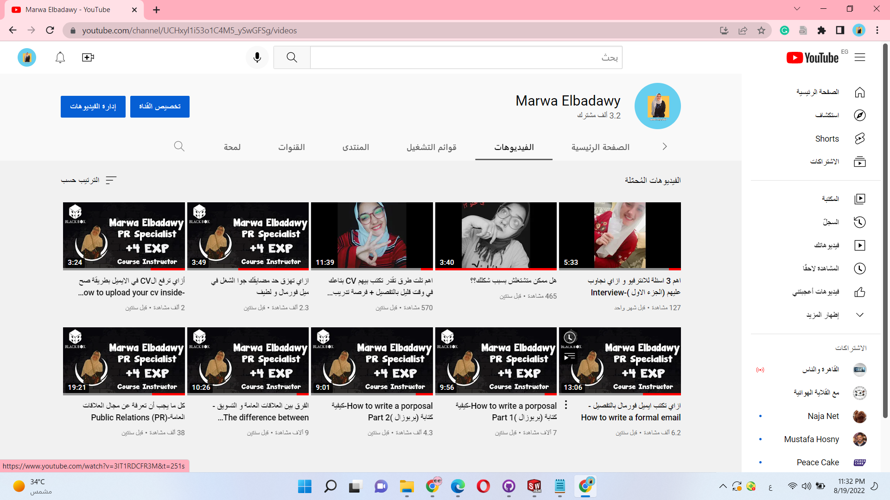
And this photo is my Facebook page
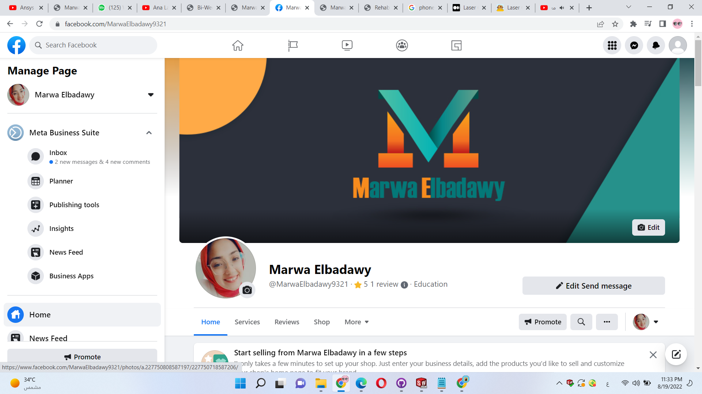
so that was the reason behind selecting a phone holder as the first task. Actually, I am not a popular person and I do not have many followers ,but I love speaking with people
Design Process
when I decided to make my task I started to search for designs idea, but there was a problem with some designs
The following designs are designs that help in standing the phone vertical and that was not my choice because I was searching for a holder that helps me to put my phone horizontally.
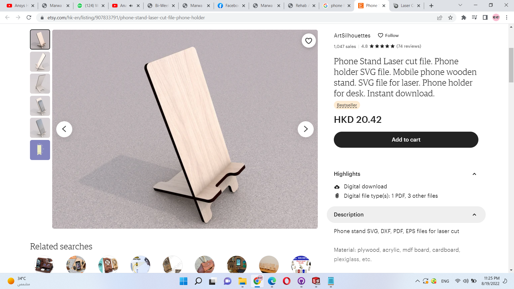 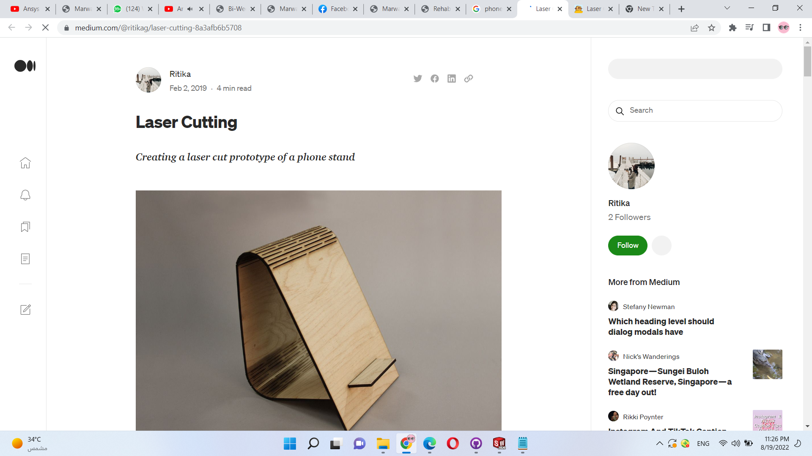Then when I searched for a horizontal phone holder design I found all designs are very short as in the photo and I need a phone holder that has a little bit high.
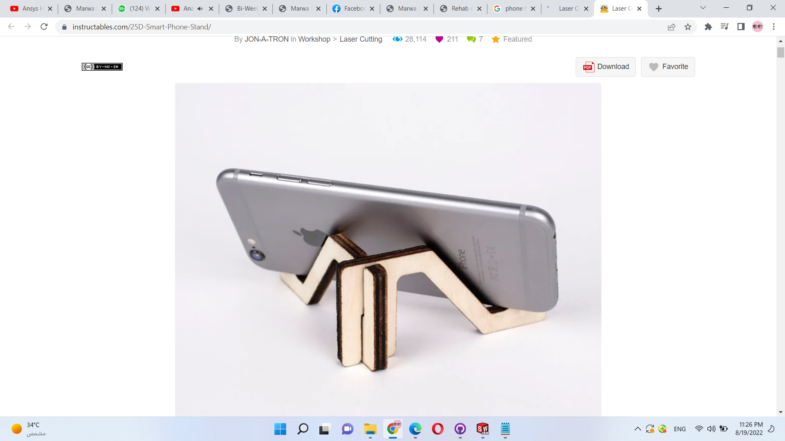So I decided to make my own design and the first step that I did was the free hand sketch for the requirements that I need.
Then I decided to draw each part using SolidWorks software my parts were :
1-Base
2-Rod
3-Plate
4-Arm
AS shown in the following figures.
The last design step was to assemble all those individual parts together to make sure all parts dimensions are fitting each other
And as I was very happy with my design I took many pictures of it
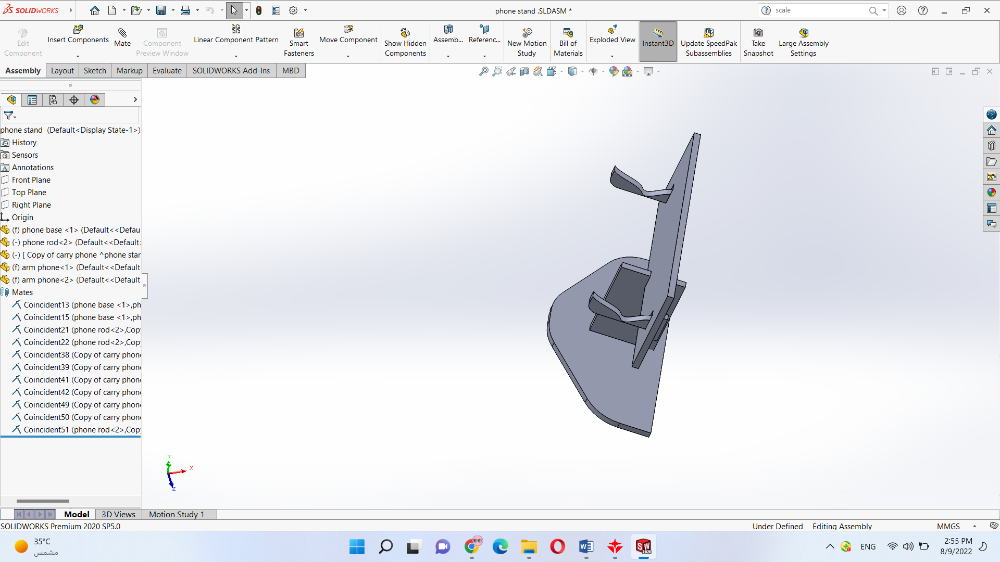 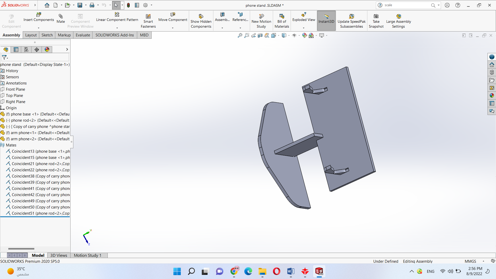 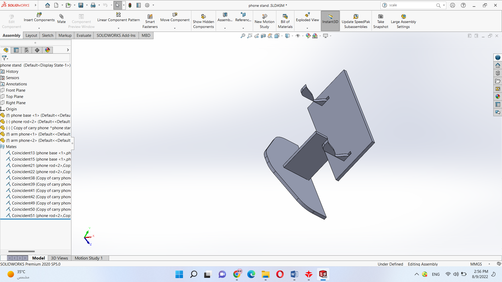
Design Modefication
While designing I asked Eng Mahmoud Ayman to help me select the best accuracy to make my design self-fastinated with out any glue or fasteners and he told me to make the length of the hole in the Base smaller than the length of the rod 0.2 mm
I wanted to add a cute cat Pic as shown on my base ,but unfornately solid works didnot help me at all as well as RDworks and i didnot solve this problem till now .
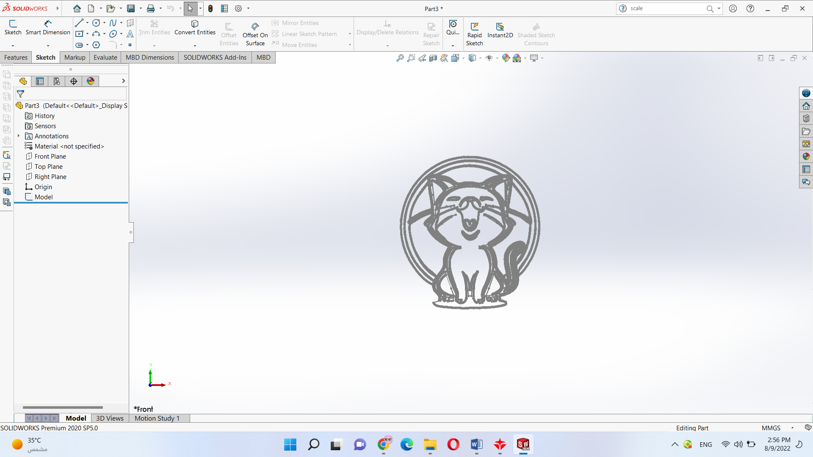
Converting CAD Files to CAM
I saved each part of my design as dxf format then I used a software called RDworks to make my file ready for the fabrication process
i sued text option in the program to write my name on the front plate of my holder.
My cutting speed was 25 and power was 75.
My scannig Speed was 100 and power 20.
this photo shows my parts in RDworks , but the monitor Eng Anas helped me to make the parts closer as shown in the second pic to prevent wasting much wood.
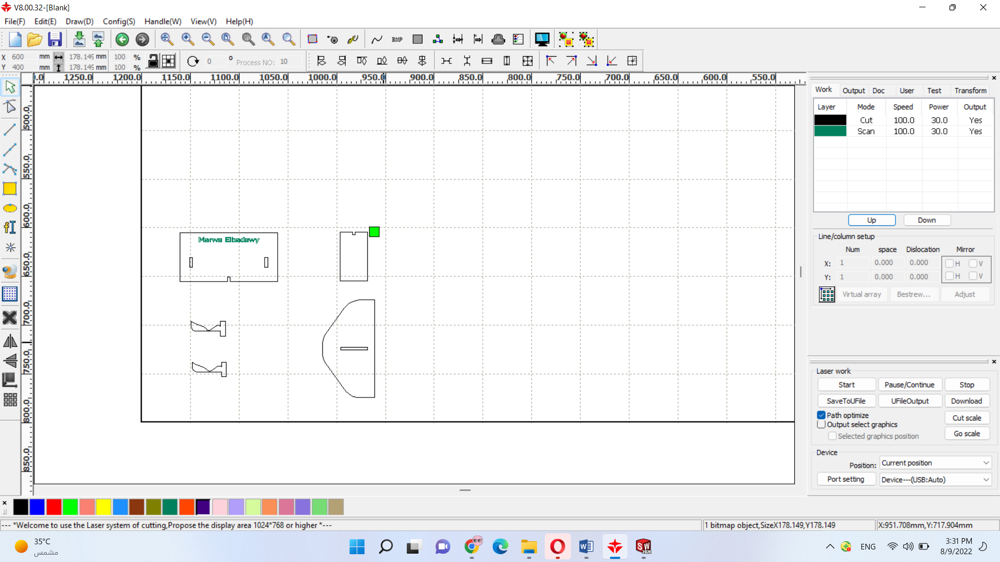 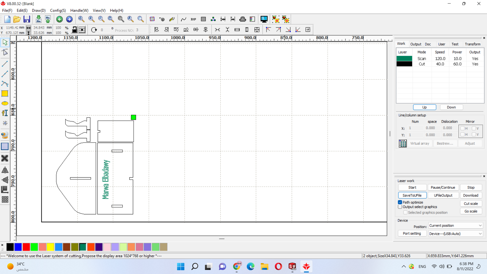
Fabrication
I used 3 mm wood to make my holder and it took less than one minute on the machine.
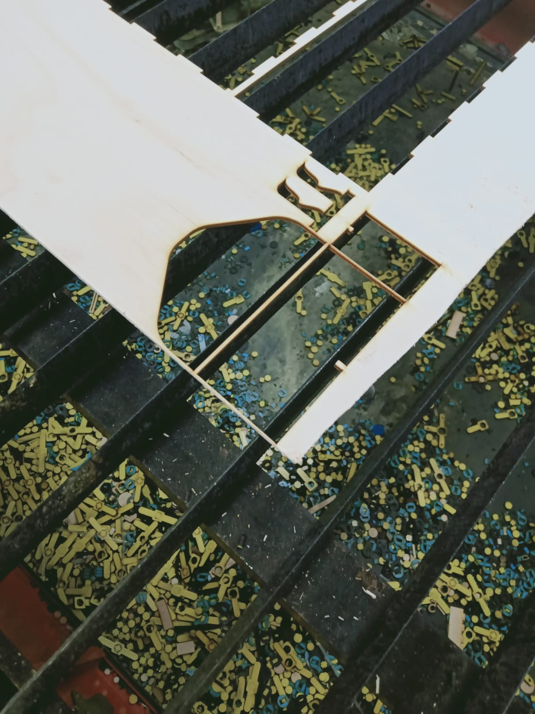 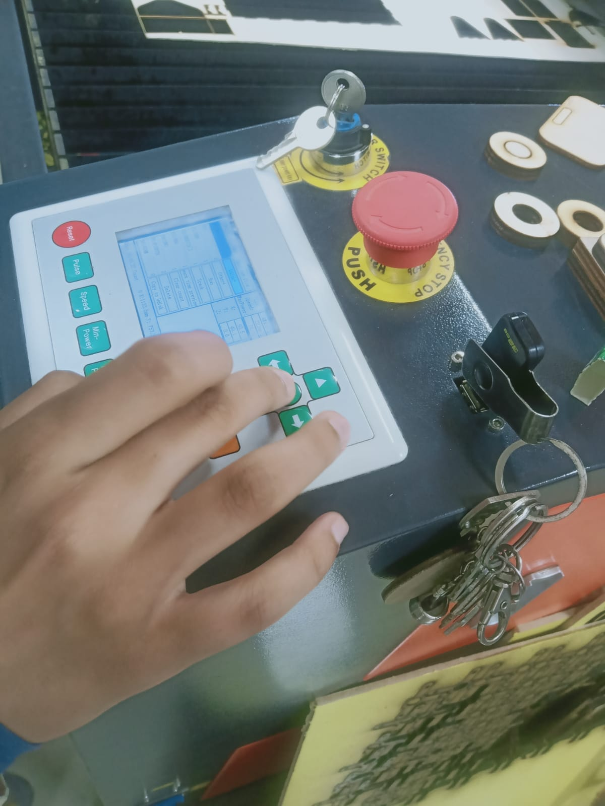
Testing
when the machine finished my parts I started to assemble them together and the monitor Eng Tarek helped me to make this, Actually, the phone which we make my test was his phone
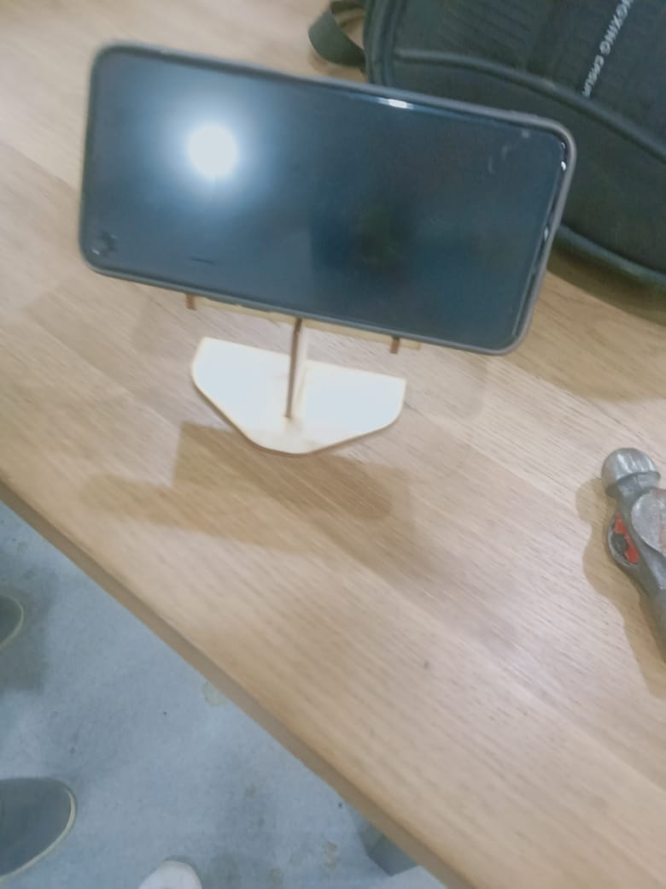
Conclusion
I want to say that I was very very happy to make something that I love and need to produce many videos.
Even if this achievement is small, I am very happy because I did my own design to some thing that i love and want.
I will be very happy if you supported me on
my Facebook acount https://www.facebook.com/MarwaElbadawy9321
and youtube channel https://www.youtube.com/channel/UCHxyl1i53o1C4M5_ySwGFSg/featured.
This link contains the source files of the design and the DXf files https://drive.google.com/drive/folders/17a-1EydUgCsJ9pQ8rhZaZgwacGvibjKB?usp=sharing
I hope you find these materials useful enough Enjoy